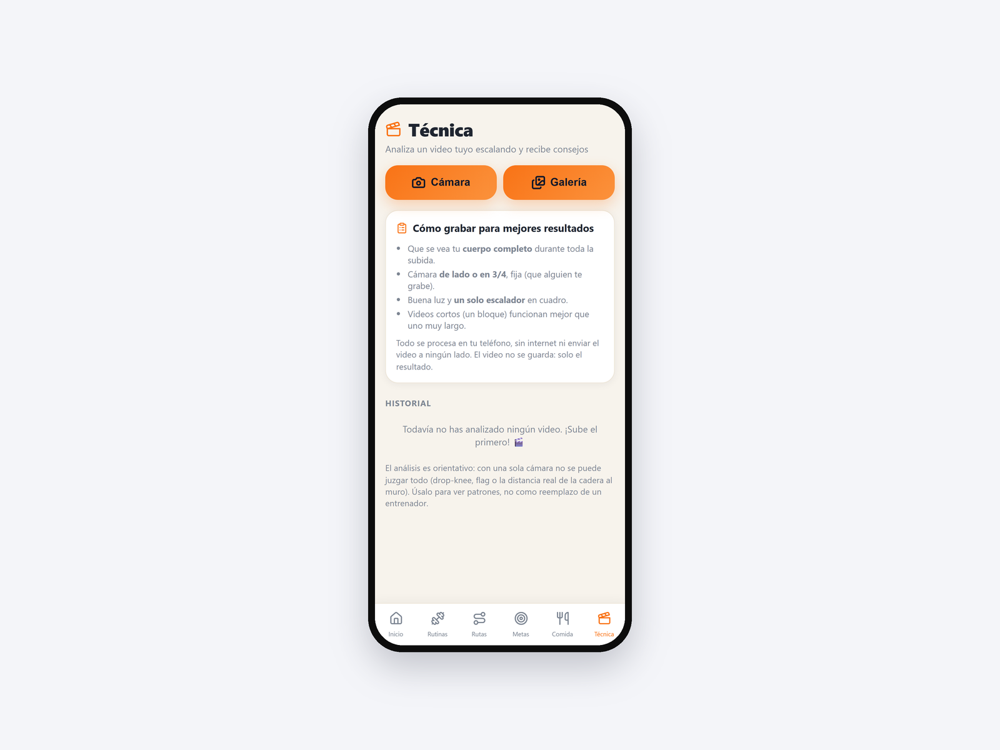
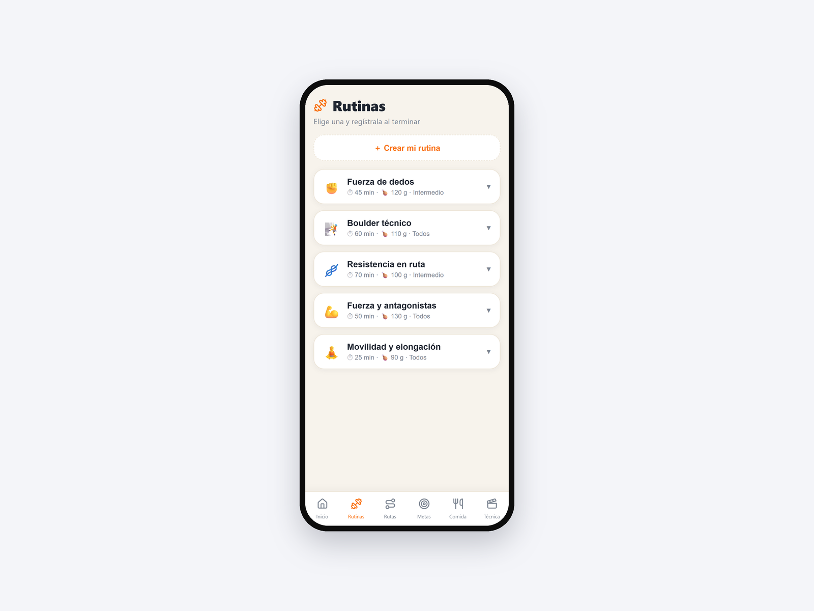
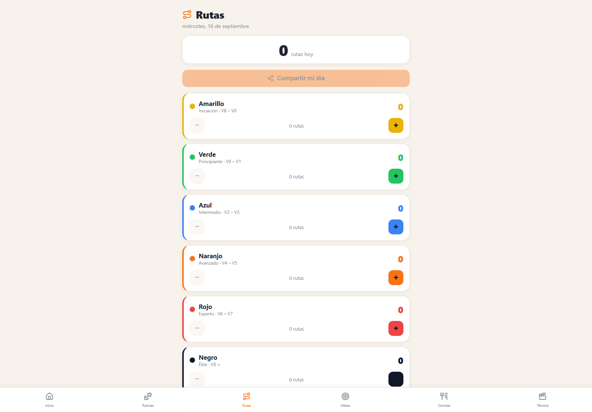

App Escalada
Entrenamiento de escalada con análisis de técnica por visión computacional, funcionando sin internet.

Una aplicación instalable de entrenamiento de escalada: rutinas, metas por color de ruta, registro de nutrición y un módulo que analiza la técnica a partir de un video de la propia escalada. El modelo de estimación de pose corre entero dentro del teléfono, sobre 33 puntos del cuerpo, y devuelve puntajes de técnica sin que el video salga nunca del dispositivo.
La decisión de fondo fue que todo funcionara sin conexión, y eso obligó a resolver tres cosas que resultaron ser los aprendizajes más transferibles del conjunto. El video se captura con el selector de archivos del navegador en vez de pedir acceso directo a la cámara, porque lo primero funciona en una red local sin certificado y lo segundo exige HTTPS. El modelo pesa casi 6 MB, así que se deja fuera de la instalación inicial y se descarga la primera vez que se usa el módulo: instalar la aplicación sigue siendo instantáneo. Y toda la lógica de pose a puntaje vive aislada, sin nada de interfaz alrededor, para poder razonarla y corregirla por separado.
Hay una decisión de producto que vale la pena contar: la racha es semanal, no diaria. Una racha diaria en una aplicación de entrenamiento empuja a entrenar lesionado para no perderla.
Bitácora
- 2026-08-20Rutas por día y compartir logrosContador de rutas por día y la posibilidad de compartir los logros en redes. Es el único de estos proyectos que recibió trabajo en agosto.
- 2026-07-01PublicadaSale en línea. Del arranque a la versión publicada pasaron once horas.
- 2026-07-01El módulo de técnicaEntra la estimación de pose sobre video. Queda pendiente calibrar los umbrales con videos reales de escalada en pared: los puntajes son plausibles, pero todavía no están validados contra la realidad.
- 2026-07-01Arranca el proyectoRutinas, metas por color de ruta y nutrición. Todo local, sin cuenta ni backend.
Pantallas


